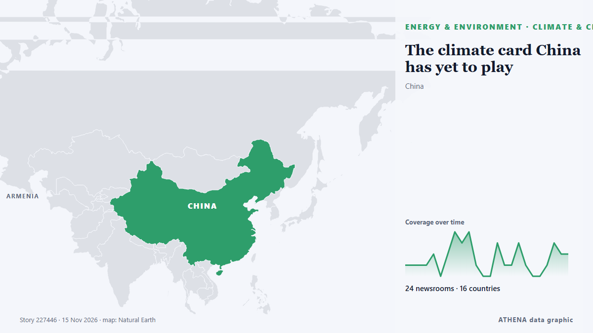

Climate & climate policy
SponsoredPresented by  Cybernetics and Artificial Intelligence Lab Welcome to the Cybernetics and Artificial Intelligence Laboratory, established at the Department of Business Administration of the National and Kapodistrian University of Athens. The lab is headed by Professor Dimitrios Thomakos. The lab aims to do research that can be published in top venues. Our research uses tools and methods of Artificial Intelligence, and lies in the following areas: - Forecasting - Decision making - Cyber security - Finance We are always looking forward to collaborating with exceptional students!
Cybernetics and Artificial Intelligence Lab Welcome to the Cybernetics and Artificial Intelligence Laboratory, established at the Department of Business Administration of the National and Kapodistrian University of Athens. The lab is headed by Professor Dimitrios Thomakos. The lab aims to do research that can be published in top venues. Our research uses tools and methods of Artificial Intelligence, and lies in the following areas: - Forecasting - Decision making - Cyber security - Finance We are always looking forward to collaborating with exceptional students!
| 2 Nov | 0 |
|---|---|
| 3 Nov | 0 |
| 4 Nov | 0 |
| 5 Nov | 0 |
| 6 Nov | 0 |
| 7 Nov | 1 |
| 8 Nov | 1 |
| 9 Nov | 3 |
| 10 Nov | 4 |
| 11 Nov | 9 |
| 12 Nov | 3 |
| 13 Nov | 1 |
| 14 Nov | 1 |
| 15 Nov | 1 |

The climate card China has yet to play
No region has been as vocal and consistent on impact of climate change on habitability and migration as the Pacific. from Post-Courier (PNG)
Afghanistan's olive groves give farmers relief from climate crisis
The United Nations Climate Change Conferences (COP) are among the most important international forums for examining the impacts of climate change, coordinating global efforts to address the crisis… from Khaama Press
UN chief urges world to end fossil fuel addiction at COP31
UN chief António Guterres called for a new global climate justice agreement at COP31 on Wednesday, urging governments to tax fossil fuel companies to help countries bearing the brunt of a crisis they… from UN News
India should get energy first, decarbonise once richer, says Steven Koonin at HT Leadership Summit
The physicist says United Nations climate talks have failed to curb emissions or deliver promised finance. from Hindustan Times
PACNEWS ONE, 13 NOVEMBER 2026
In this bulletin: 1. UN — UN Climate chief Stiell urges countries to act on methane, warning of economic and climate costs 2. from Islands Business (Fiji)
‘Erdogan did not invite Christodoulides to Cop31’
President Nikos Christodoulides’ invitation to attend the Cop31 climate summit in Antalya came from the summit’s secretariat rather than Turkish President Recep Tayyip Erdogan, Turkish newspaper… from Cyprus Mail
The planet ‘is being killed’, Greta Thunberg tells Cop31 climate summit
Swedish activist criticised world governments for their failure to prevent environmental breakdown The planet is “not dying, it is being killed and we know by who”, said Greta Thunberg, who… from The Guardian
Emine Erdoğan showcases Türkiye's zero waste drive at COP31
Türkiye's first lady, Emine Erdoğan, inaugurated the Zero Waste Museum in the Blue Zone of the 31st United Nations Climate Change Conference (COP31) in Antalya on Thursday. from Daily Sabah
Global Warming Remains Unchecked, Experts Warn at UN’s COP31 Climate Summit
Climate Minister Darragh O’Brien will coordinate the bloc’s negotiations alongside the European Commission at COP31. from TheJournal.ie
Oil prices are so high that CO2 emissions from fossil fuels are dropping
It's not quite a victory for humanity's transition to renewables. from Science News
Chinese vice president meets Turkish president on sidelines of COP31
Chinese Vice President Han Zheng, as President Xi Jinping's special representative, met with Turkish President Recep Tayyip Erdogan on Wednesday on the sidelines of the Antalya Leaders' Summit of the… from CGTN (World)
COP31 participants say China injects impetus into global green development
A recent report from the Global Maritime Forum reveals that China has quickly become a global leader in green shipping. from Cyprus Shipping News
Fund for Energy Efficiency Technologies FEET is the first fund to adopt the Singapore-Asia Taxonomy for Sustainable Finance
• GCMD’s methodology for quantifying fuel savings from wind-assisted propulsion systems has been independently reviewed by Lloyd’s Register. • The. from Cyprus Shipping News
Climate change shows ‘our destinies are interconnected’: Türkiye’s COP31 president
Murat Kurum urges global cooperation, saying no country can shield itself from rising seas, droughts and extreme weather alone. from Anadolu Agency (English)
Nigeria pitches $2.2 billion flare gas plan to investors as flaring persists
The chief executive of the Nigerian Upstream Petroleum Regulatory Commission (NUPRC), Oritsemeyiwa Eyesan, said flare sites under the Nigerian Gas Flare Commercialisation Programme could support… from Premium Times
UK appoints 'climate security' envoy, a world first
ANTALYA: British Prime Minister Andy Burnham announced on Thursday the appointment of a special envoy focused on “climate security“, a world first, to better prepare for the growing impacts of global… from New Straits Times
Burnham Heads to COP31 Torn Between Cheaper Power and Net Zero
Andy Burnham will face difficult decisions on energy policy against the competing pressures of sky-high industrial costs and Labour’s net zero commitments. from OilPrice.com
Kurdistan President, Armenian PM explore closer ties, regional diplomacy
Shafaq News- Antalya Kurdistan Region President Nechirvan Barzani and Armenian Prime Minister Nikol Pashinyan discussed expanding cooperation between Yerevan, Baghdad, and Erbil on Thursday… from Shafaq News (English)
UN chief urges governments to tax Big Oil windfall profits
‘Polluters must pay,’ says António Guterres. from Euractiv